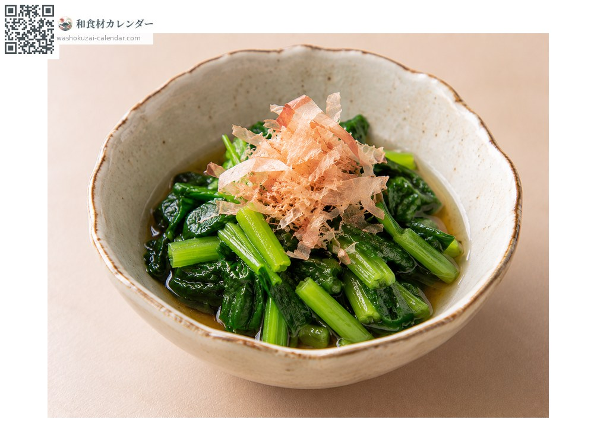
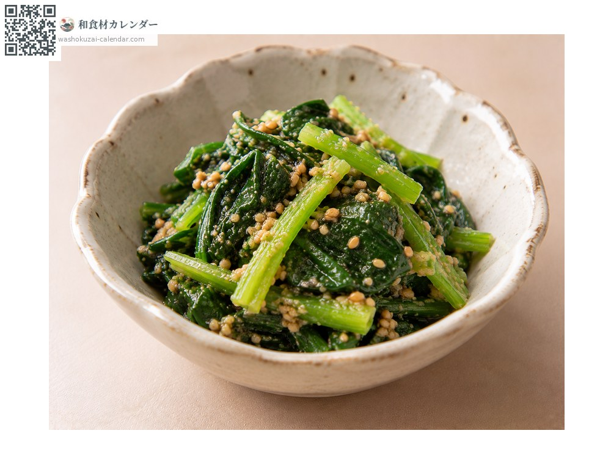
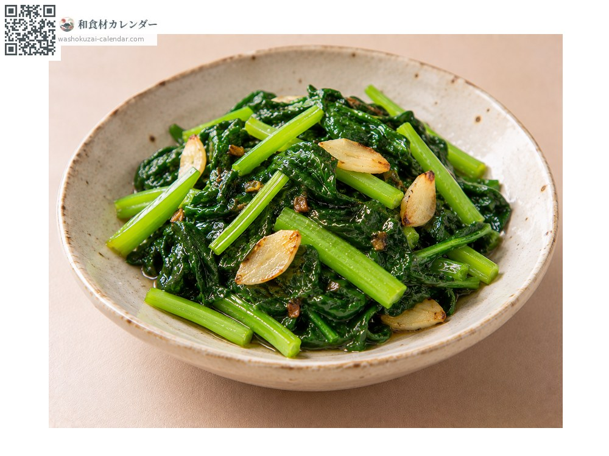
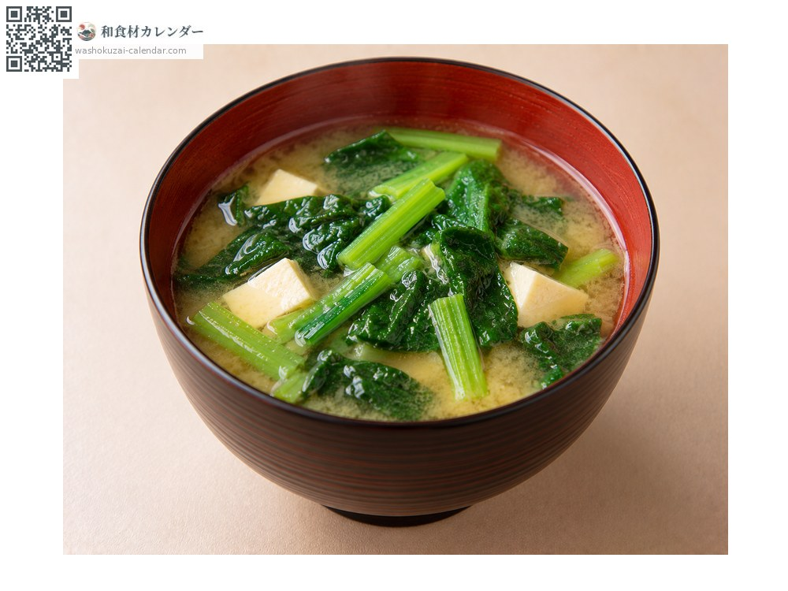

蔬菜
落葵（皇宫菜）
つるむらさき つるむらさき
应季时期为6月、7月、8月

应季时期
1月
2月
3月
4月
5月
6月
7月
8月
9月
10月
11月
12月
应季有供应
烹饪方法

烫青菜
快速焯水后浸在高汤里，独特的黏滑感会出现。

凉拌
用芝麻或芥末凉拌，黏滑感能让调味料附着得更好。

热炒
用麻油炒，加蒜会更香。

味噌汤
最后才加，汤里会带上稠度。
挑选方法
叶子厚实深绿、茎不过于粗硬。切口水嫩。
保存方法
用湿纸包好直立冷藏，两到三天内用完。
主要产地
小知识
原产于热带亚洲的蔓性蔬菜，与菠菜属于不同的科。耐热性强，正好在夏天叶菜稀少的时节上市。带有独特的黏滑感与土壤香气，焯水过久黏性会太强，所以要迅速处理。有红茎与绿茎两种品种。